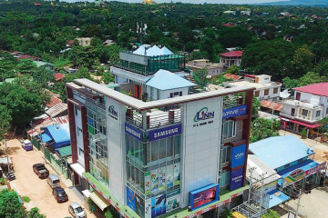

Who We Are
Linn IT Solution Co., Ltd. is one of the leading technology sales and service providers in Myanmar. We deliver high-quality IT products, electronic devices, CCTV security systems, and hardware & software maintenance services.
Our Mission & Vision
Our Vision
Linn IT Solution Company Ltd. aims to be the number one company providing the best services across Myanmar.
Our Mission
We will collaborate with disciplined and highly competent staff. We will work towards achieving ISO certification by 2026 and strive to deliver the best possible service.

Our Values
Quality Products
Authentic gadgets, accessories, and computing equipment from top global brands.
Expert Support
Professional engineers and technicians ready to assist with any technical issues.
Customer Satisfaction
Providing genuine warranty and dedicated post-purchase customer care services.
Since
2005
Established on 5 May 2005 at Bogyoke Street, Pyinmana as Linn IT Solutions Center — servicing IT systems for ministries, defence offices and private companies. We then opened trainings for computers and began selling computers and accessories.
2008
Linn IT Solutions Center-2 (Thapyaygone) was established at No.(117) Thapyaygone Quarter, Nay Pyi Taw to serve the needs of ministries more quickly. We also registered as Linn IT Solutions Co., Ltd (Company Register No. 1623/2018-2011). Mobile phones and accessories were sold at the Pyinmana and Nay Pyi Taw shops as Linn IT & Mobile Shop.
2015
On 5 April 2015, we opened Linn IT Solutions Co., Ltd as Linn IT & Mobile Mart at Pyinmana, Nay Pyi Taw Council campus.
2018
To develop working opportunities for youths, we opened Mobile Software & Training, Networking Training and Language Training (English, Chinese) at No.14/585, Paung Laung 4th Street, Paung Laung (1) Quarter, Nay Pyi Taw.